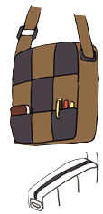
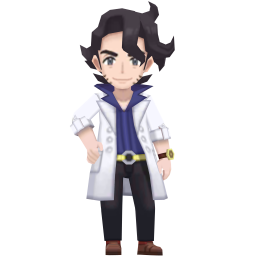

Professor Augustine Sycamore is a young man (presumably mid-30s to early 40s) with black hair, all dolled up into the cutest perm. He is slim all over and wears trendy clothes that perfectly embody Lumiose's Parisian influences! His outfit features a tailored lab coat with classic notched lapels, and unlike traditional boxy lab coats, his is fitted with a defined waistline, shoulders, and big pockets.
Beneath this, he has a button-up shirt with a popped cutaway collar. This shows fashion confidence without breaking too many conventions! It helps emphasize his neck and jawline confidently, and the style choice helps distinguish him from more traditional professor characters. It helps illustrate he is somebody who cares about his appearance, but is also professional! Deep blue can represent knowledge and depth, reflecting his role as both Kalos' premiere professor, and perhaps a nod to one of XY's box legendaries - Xerneas!
His trousers are a slim fit with a flat front and create such a handsome look for him! His shoes are brown loafers, perfect for a professor moving between lab work and field research, and if you look closely, you'll see a pop of orange with his socks. How adorable...!
 He has strong features, such as his jawline and chin, but he also has the gentlest blue-gray eyes. They make him look so so kind and caring! In XY, you only ever see him in his chic lab coat, but his concept art shows how he'd look without it and he's just as stylish. The professor loves to accessorize, because he has a cute vintage watch, a statement-making belt, and a canvas bag that's practical and stylish! A fun fact about his watch is that in his concept art, it says this:
Which, loosely translated, says "His HT is one of a kind made from a vintage watch". HT, in this case, I think stands for holotech, since Professor Sycamore's watch also counts as a holocaster. The fact that it's one of a kind says that it was custom-made specifically for him out of a vintage watch, but who would do such a thing? Perhaps he took it to a shop, maybe he had a friend do it for him, or maybe he did it himself? Who could say!
His hobbies include cafe hopping, trying new food, meeting new people, traveling, mega evolution, teaching, and studying Pokémon. I choose to believe that because he's so fashionable, he must favor looking good too, in his own way! I think his outfit balances references to older stylings, modern twists, and mirrors my idea of him honoring tradition while also embracing transformation. Looking at his watch, his outfit, his office, it's all about past knowledge and future possibilities!
We don't get many insights into his dislikes. He is patient, open-minded, and sometimes this is to his detriment. He can be an airhead, is a bit theatrical at times, he's not too good at roller-skating, and he's definitely had his heart broken... oh, c'est la vie!
Professor Sycamore is mostly seen as a tiny model during the course of XY. He is a little chibi man, which is the aesthetic! Personally, I feel like the chibi models for XY were so cute and so fitting for Pokémon.  They are so cute, and even have little custom animations they do, so if you ever replay Pokémon XY, be on the lookout for his animations. Because they show how much he talks with his hands. It gives him that much more personality when his little chibi form is waving his arms! Cute! He is also one of the few characters in XY with a full-size model, made for cutscenes he appears in. He appears several times over the course of the game!